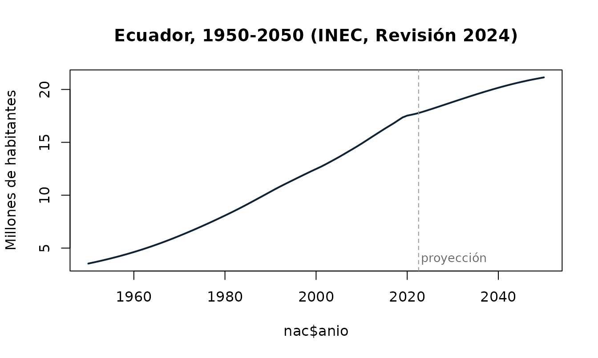
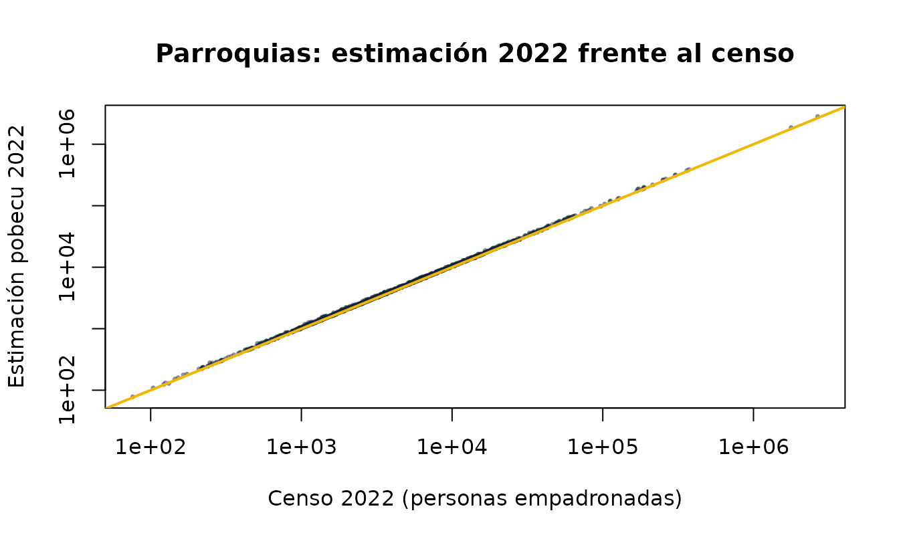
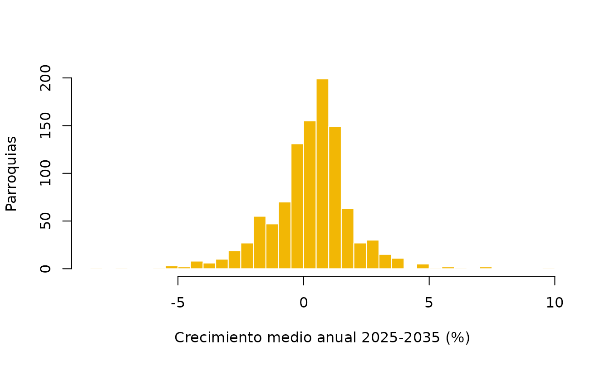

Metodología: fuentes, proyecciones y estimación parroquial
Source:vignettes/metodologia.Rmd
metodologia.RmdEsta viñeta explica de dónde salen las cifras de pobecu, qué hace el INEC para producir sus estimaciones y proyecciones, y cómo construye pobecu la estimación parroquial, que el INEC no publica. También resume las verificaciones que pasan los datos y sus limitaciones.
1. Qué es oficial y qué no
| Nivel | Periodo | Sexo y edad | Urbano/rural | Origen |
|---|---|---|---|---|
| Nacional | 1950-2050 | 0-100+ | 2010-2035 | INEC, oficial |
| Provincia | 1990-2035 | 0-100+ | 2010-2035 | INEC, oficial |
| Cantón | 2010-2035 | 0-100+ | 2010-2035 | INEC, oficial |
| Parroquia | 2010-2035 | 0-4 … 85+ | no | Estimación pobecu |
- Las cifras hasta 2022 son estimaciones, es decir, reconstrucciones del pasado que concilian censos, estadísticas vitales y encuestas. Desde 2023 son proyecciones.
- Todas se refieren al 30 de junio de cada año, la fecha usual para denominadores de tasas anuales.
- pobecu no modifica las cifras oficiales. Solo las reorganiza en formato largo, agrupa edades y agrega códigos y nombres.
pob_fuentes()
#> pobecu 0.1.0 · datos datos-v0.1.0
#> Estimaciones hasta 2022 y proyecciones desde 2023, al 30 de junio de cada año.
#>
#> nivel periodo area edad tipo
#> nacional 1950-2050 2010-2035 0-100+ oficial
#> provincia 1990-2035 2010-2035 0-100+ oficial
#> canton 2010-2035 2010-2035 0-100+ oficial
#> parroquia 2010-2035 no 0-4 ... 85+ estimación pobecu
#>
#> Fuentes:
#> * INEC, Estimaciones y Proyecciones de Población, Revisión 2024 (actualización con áreas, 2025).
#> https://www.ecuadorencifras.gob.ec/proyecciones-poblacionales/
#> * INEC, VIII Censo de Población y VII de Vivienda 2022.
#> https://www.censoecuador.gob.ec/resultados-censo/
#> Las cifras parroquiales no son oficiales: ver ?pob_parroquias.2. Las proyecciones oficiales del INEC (Revisión 2024)
La Revisión 2024 de las Estimaciones y Proyecciones de Población reemplaza a la de 2012 y se basa en el VIII Censo de Población y VII de Vivienda 2022. Fue calculada por edad simple y año calendario. La actualización de 2025 añadió la desagregación por área de residencia. En resumen, según la documentación del INEC:
Nacional y provincial: método de los componentes demográficos por cohortes. La población de cada año se obtiene de la del año anterior mediante la ecuación compensadora, población + nacimientos − defunciones + inmigrantes − emigrantes, aplicada a cada cohorte de edad y sexo. Cada componente se estima por separado:
- Fecundidad: la tasa global de fecundidad y su estructura por edad se reconstruyen desde 1950 combinando estadísticas vitales, historias de nacimientos de encuestas (ENDEMAIN, ENSANUT) y métodos indirectos sobre los censos (P/F de Brass, Arriaga, supervivencia inversa). Su evolución futura se modela con curvas logísticas.
- Mortalidad: tablas de vida para años pivote, construidas con defunciones registradas y censos e interpoladas entre ellos. La esperanza de vida se proyecta con funciones logísticas y el método Lee-Carter.
- Migración: saldos netos internacionales e internos estimados a partir de los censos y de registros de entradas y salidas.
El INEC aplica este método hasta el nivel provincial porque allí las fuentes son suficientemente confiables.
Cantonal: extrapolación logística de proporciones con variables sintomáticas. La población de cada provincia, proyectada por componentes, se reparte entre sus cantones según su participación, que se interpola y extrapola con una función logística (Arriaga, 1994; logistic shift-share). Esa participación se aproxima con variables sintomáticas, es decir, indicadores administrativos que siguen a la población (Bay, 1998). La desagregación por sexo y edad del cantón se ajusta por raking (ajuste proporcional iterativo) para que sea coherente con la provincia.
Urbano y rural: método de proyecciones derivadas (Naciones Unidas, 1974; CEPAL, 2024). El porcentaje urbano de cada cantón y sexo se calcula en los censos y se proyecta con una curva logística con asíntotas. La población rural es la diferencia con el total cantonal.
Por construcción, los tres niveles son coherentes: los cantones suman su provincia y las provincias suman el total nacional.
nac <- poblacion("nacional")
plot(nac$anio, nac$poblacion / 1e6, type = "l", lwd = 2, col = "#0F2233",
xlab = NULL, ylab = "Millones de habitantes",
main = "Ecuador, 1950-2050 (INEC, Revisión 2024)")
abline(v = 2022.5, lty = 2, col = "grey60")
text(2023, 4, "proyección", adj = 0, col = "grey40", cex = 0.85)
3. Estimación parroquial de pobecu
El INEC no proyecta parroquias: las fuentes no permiten aplicar el método de componentes a ese nivel, y las variables sintomáticas son escasas. pobecu llena ese vacío extendiendo un nivel hacia abajo la misma lógica que usa el INEC entre provincia y cantón. El resultado es una estimación, no una cifra oficial.
Unidades
Se usan las 1042 parroquias del Censo 2022: 221 cabeceras cantonales
(código terminado en 50, que agrupa todas las parroquias
urbanas del cantón) y 821 parroquias rurales. El censo publica la
población de 2010 recalculada en los límites de 2022, lo que permite
comparar las dos fechas en el mismo territorio.
Paso 1: participación de cada parroquia en su cantón
Sea la proporción de la población del cantón que vive en la parroquia . Se observa en los dos censos, y (28 de noviembre de 2010 y noviembre de 2022), y se supone que evoluciona en línea recta en la escala logit:
Para entre los censos esto interpola, y después de 2022 extrapola. La curva logística mantiene cada proporción entre 0 y 1. Luego las proporciones se reescalan para que sumen exactamente 1 en cada cantón: .
Hay dos excepciones (columna metodo de
dpa_pob):
table(dpa_pob$metodo)
#>
#> logistica parroquia_unica participacion_constante
#> 905 41 96-
participacion_constante: cantones con alguna parroquia creada después de- Esa parroquia no tiene población en 2010 y la parroquia de la que se separó muestra una caída aparente, así que la tendencia no es interpretable. Se mantiene la proporción del Censo 2022.
-
parroquia_unica: cantones de una sola parroquia, que reciben todo el cantón.
Paso 3: sexo y edad por ajuste proporcional iterativo
Para cada cantón y año se construye una matriz con parroquias en filas y las 36 combinaciones de sexo × grupo quinquenal (0-4 a 85+) en columnas. La semilla es la estructura observada de cada parroquia en el Censo 2022. El IPF (raking) ajusta la matriz alternando filas y columnas hasta cumplir dos márgenes a la vez:
- filas: los totales parroquiales del paso 2;
- columnas: la población oficial del cantón por sexo y grupo de edad.
Así cada parroquia conserva su perfil propio (más joven, más envejecida, más masculina), y en conjunto reproduce exactamente la estructura del cantón. Es el mismo procedimiento que usa el INEC para desagregar los cantones.
Paso 4: redondeo
Las celdas se redondean a enteros por el método del mayor residuo dentro de cada columna. De este modo, la suma de las parroquias es exactamente igual a la cifra oficial del cantón, por sexo y grupo de edad. El total de cada parroquia puede diferir del paso 2 en unas pocas personas.
4. Verificaciones
Los scripts de data-raw/ se detienen si falla alguna de
estas comprobaciones:
- el total nacional es igual a la suma de las provincias y de los cantones en cada año;
- urbano + rural = total en cada cantón, año, sexo y edad;
- la estructura por sexo y edad de cada parroquia en el censo suma su población total;
- las 1042 parroquias tienen un código DPA único;
- las parroquias suman exactamente el cantón en cada año, sexo y grupo de edad.
Además, el paquete reproduce las cifras publicadas por el INEC. Por ejemplo, Guayaquil tiene 2 908 589 habitantes en 2022 y 3 218 450 en 2035.
Estimación de 2022 frente al conteo censal. La estimación parroquial de 2022 no coincide con el censo, y no debe hacerlo: la proyección del INEC corrige la omisión censal y se refiere a junio, no a noviembre. La relación entre ambas es estable entre parroquias:
e22 <- suppressMessages(poblacion("parroquia", anio = 2022))
cmp <- merge(e22, dpa_pob[, c("dpa_parroq", "censo_2022")], by = "dpa_parroq")
summary(cmp$poblacion / cmp$censo_2022)
#> Min. 1st Qu. Median Mean 3rd Qu. Max.
#> 0.9773 1.0260 1.0371 1.0412 1.0520 1.1296
plot(cmp$censo_2022, cmp$poblacion, log = "xy", pch = 16, cex = 0.5,
col = adjustcolor("#0F2233", 0.5),
xlab = "Censo 2022 (personas empadronadas)",
ylab = "Estimación pobecu 2022",
main = "Parroquias: estimación 2022 frente al censo")
abline(0, 1, col = "#F2B705", lwd = 2)
Crecimiento proyectado. La tasa media anual 2025-2035 de las parroquias se concentra cerca de la del país, con colas en las parroquias que más crecieron o decrecieron entre los censos:
p <- suppressMessages(poblacion("parroquia", anio = c(2025, 2035)))
w <- reshape(p[, c("dpa_parroq", "anio", "poblacion")], idvar = "dpa_parroq",
timevar = "anio", direction = "wide")
w$tasa <- 100 * ((w$poblacion.2035 / w$poblacion.2025)^(1 / 10) - 1)
hist(w$tasa, breaks = 60, col = "#F2B705", border = "white",
xlab = "Crecimiento medio anual 2025-2035 (%)", ylab = "Parroquias",
main = NULL)
5. Limitaciones
- La estimación parroquial prolonga la tendencia 2010-2022. Si una parroquia creció mucho entre los censos, por ejemplo por expansión urbana, la proyección supone que sigue ganando participación hasta 2035, y al revés para las que perdieron población. El propio INEC advierte que este tipo de extrapolación puede sobrestimar o subestimar las áreas extremas. A más años desde 2022, más incertidumbre.
- Sin área urbana/rural parroquial. La cabecera cantonal concentra el área urbana, pero también incluye periferia rural.
- Grupo abierto 85+ en parroquias, porque el tabulado parroquial del censo llega hasta ese grupo.
-
Parroquias urbanas. Las parroquias urbanas, como
las 15 de Cuenca o las de Quito y Guayaquil, no tienen población propia
en el Censo 2022. Para datos que usan esos códigos, ver
homologar_parroquia()yagrupar_cabeceras(). - Límites territoriales. Las cifras usan la División Político-Administrativa vigente en el Censo 2022.
6. Actualización
Los datos se regeneran de forma reproducible con los scripts de data-raw/:
-
01_preparar_datos.R: descarga y lee los tabulados del INEC y asigna códigos a las parroquias del censo. -
02_estimar_parroquias.R: estimación parroquial (pasos 1 a 4). -
03_construir_datos.R: tablas del paquete y archivo de edades simples para el release. -
04_logo.R: logo del paquete.
Cuando el INEC publique una nueva revisión, basta con actualizar los
enlaces, volver a ejecutar los scripts y publicar una nueva versión del
paquete con un nuevo release de datos.
pob_fuentes() indica siempre qué revisión se está
usando.
Referencias
- Arriaga, E. (1994). Population Analysis with Microcomputers. U.S. Bureau of the Census.
- Bay, G. (1998). Proyecciones de población de áreas menores con variables sintomáticas. CELADE.
- CEPAL (2024). Métodos para estimaciones y proyecciones de población urbana y rural.
- INEC (2024). Estimaciones y Proyecciones de la Población de Ecuador, Revisión 2024. Boletín técnico y metodología.
- INEC (2025). Metodología de las Estimaciones y Proyecciones de Población por área de residencia, Revisión 2024.
- Naciones Unidas (1974). Methods for Projections of Urban and Rural Population. Manual VIII.